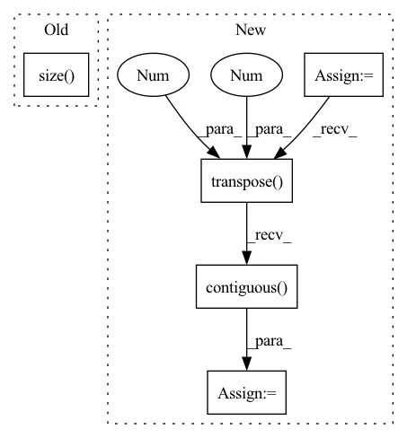

Pattern ID :2198
Before Change
q = self.proj_q(q).view(-1, q.size(1), self._head_dims)
k = self.proj_k(k).view(-1, k.size(1), self._head_dims)
v = self.proj_v(v).view(-1, v.size( 1) , self._head_dims)
att = torch.bmm(q, k.transpose(1, 2)) / self._h_dims**0.5
After Change
b = q.size(1) * self._heads
q = self.q(q).view(-1, b, self._head_dims).transpose(0, 1)
k = self.k(k).view(-1, b, self._head_dims).transpose(0, 1)
v = self.v(v).view(-1, b, self._head_dims).transpose(0, 1)
att = torch.bmm(q, k.transpose(1, 2)) / self._h_dims**0.5
if mask is not None:
mask = torch.where(mask > 0, .0, float("-inf"))
mask = mask.repeat_interleave(self._heads, dim=0)
att += mask.unsqueeze(1).expand(-1, att.size(1), -1)
att = att.softmax(-1)
if self.dropout is not None:
att = self.dropout(att)
m = torch.bmm(att, v).transpose(0, 1).contiguous()
m = self.m(m).view(m.size(0), -1, self._h_dims).transpose(0, 1)
return m
In pattern: SUPERPATTERN
Frequency: 3
Non-data size: 5
Instances Fragment ID: 7744374
Project Name: yeliudev/nncore
Commit Name: e58a22da4dce9778c38aae284b0c80d84937b04c
Time: 2021-11-05
Author: yeliudev@outlook.com
File Name: nncore/nn/blocks/transformer.py
M Class Name: MultiHeadAttention
N Class Name: MultiHeadAttention
M Method Name: forward(5)
N Method Name: forward(5)
M Parent Class: nn.Module
N Parent Class: nn.Module
M File Name: nncore/nn/blocks/transformer.py
N File Name: nncore/nn/blocks/transformer.py
M Start Line: 79
M End Line: 98
N Start Line: 79
N End Line: 105
Before Change
enc_output = self.encode(inputs, i_mask)
t_mask = utils.create_pad_mask(targets, self.trg_pad_idx)
target_size = targets.size() [1]
t_self_mask = utils.create_trg_self_mask(target_size,
device=targets.device)
return self.decode(targets, enc_output, i_mask, t_self_mask, t_mask)After Change
def forward(self, padded_input, input_lengths, padded_target):
if self.feat_extractor == "emb_cnn" or self.feat_extractor == "vgg_cnn":
padded_input = self.conv(padded_input)
// Reshaping features
sizes = padded_input.size() // B x H_1 (channel?) x H_2 x T
padded_input = padded_input.view(sizes[0], sizes[1] * sizes[2], sizes[3])
padded_input = padded_input.transpose(1 , 2).contiguous() // BxTxH
encoder_padded_outputs, _ = self.encoder(padded_input, input_lengths)
pred, gold, *_ = self.decoder(padded_target, encoder_padded_outputs, input_lengths) Fragment ID: 7744380
Project Name: qute012/kosr
Commit Name: b7d24b0d835254fd425224eba3421a3b7224e55f
Time: 2021-01-12
Author: ejrwls012@gmail.com
File Name: model/transformer/transformer.py
M Class Name: Transformer
N Class Name: Transformer
M Method Name: forward(4)
N Method Name: forward(3)
M Parent Class: nn.Module
N Parent Class: nn.Module
M File Name: model/transformer/transformer.py
N File Name: model/transformer/transformer.py
M Start Line: 19
M End Line: 28
N Start Line: 18
N End Line: 34
Before Change
memory_input = torch.div(outputs[-1] + memory[t-1], 2.0)
// add a random noise
noise = torch.autograd.Variable(
memory_input.data.new(memory_input.size() ).normal_(0.0, 0.5))
memory_input = memory_input + noise
// PrenetAfter Change
outputs = []
alignments = []
stop_outputs = []
t = 0
memory_input = initial_memory
while True:
if t > 0:
if greedy:
memory_input = outputs[-1]
else:
// combine prev. model output and prev. real target
// memory_input = torch.div(outputs[-1] + memory[t-1], 2.0)
// add a random noise
// noise = torch.autograd.Variable(
// memory_input.data.new(memory_input.size()).normal_(0.0, 0.5))
// memory_input = memory_input + noise
memory_input = memory[t-1]
// Prenet
processed_memory = self.prenet(memory_input)
// Attention RNN
attention_rnn_hidden, current_context_vec, alignment = self.attention_rnn(
processed_memory, current_context_vec, attention_rnn_hidden,
inputs)
// Concat RNN output and attention context vector
decoder_input = self.project_to_decoder_in(
torch.cat((attention_rnn_hidden, current_context_vec), -1))
// Pass through the decoder RNNs
for idx in range(len(self.decoder_rnns)):
decoder_rnn_hiddens[idx] = self.decoder_rnns[idx](
decoder_input, decoder_rnn_hiddens[idx])
// Residual connectinon
decoder_input = decoder_rnn_hiddens[idx] + decoder_input
output = decoder_input
stop_token_input = decoder_input
// stop token prediction
stop_token_input = torch.cat((output, current_context_vec), -1)
stop_output = self.stop_token(stop_token_input)
// predict mel vectors from decoder vectors
output = self.proj_to_mel(output)
outputs += [output]
alignments += [alignment]
stop_outputs += [stop_output]
t += 1
if (not greedy and self.training) or (greedy and memory is not None):
if t >= T_decoder:
break
else:
if t > 1 and is_end_of_frames(output, self.eps):
break
elif t > self.max_decoder_steps:
print(" !! Decoder stopped with "max_decoder_steps". \
Something is probably wrong.")
break
assert greedy or len(outputs) == T_decoder
// Back to batch first
alignments = torch.stack(alignments).transpose(0, 1)
outputs = torch.stack(outputs).transpose(0, 1).contiguous()
stop_outputs = torch.stack(stop_outputs).transpose(0 , 1).contiguous()
return outputs, alignments, stop_outputs
Fragment ID: 7744284
Project Name: coqui-ai/tts
Commit Name: 5750090fcd4a6718608c7357e3890f5b2a545ae0
Time: 2018-03-22
Author: egolge@mozilla.com
File Name: layers/tacotron.py
M Class Name: Decoder
N Class Name: Decoder
M Method Name: forward(3)
N Method Name: forward(3)
M Parent Class: nn.Module
N Parent Class: nn.Module
M File Name: layers/tacotron.py
N File Name: layers/tacotron.py
M Start Line: 255
M End Line: 347
N Start Line: 259
N End Line: 359